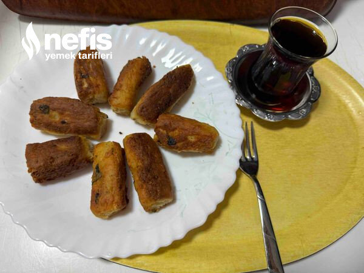
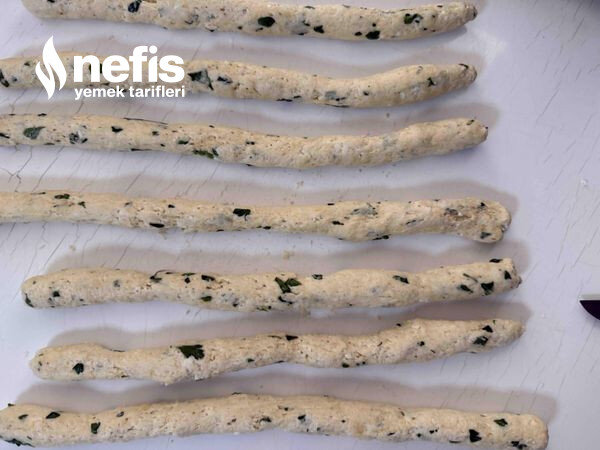
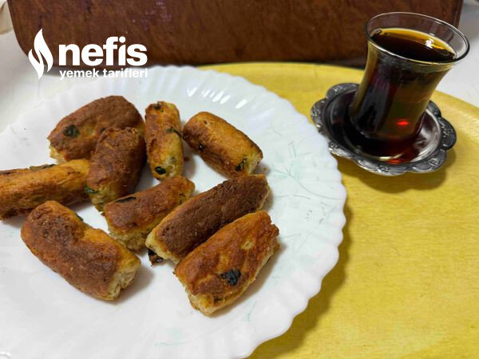

Kolay Rulo Pişi
2025-08-27
← Tüm tarifler

🍽️ 4-6 kişilik
⏱️ Hazırlık: 10 dk
🔥 Pişirme: 15 dk
🏷️ Hamur İşi Tarifleri
Malzemeler
300 gr rendelenmiş karışık peynir( beyaz peynir, tulum, kaşar olabilir)
1 adet yumurta
1 çay bardağı kadar süt
1 paket kabartma tozu
3 su bardağı kadar un( kontrollü konabilir)
1 tutam kıyılmış maydanoz
1 çay kaşığı tuz( peynir tuzlu olduğundan fazla koymaya gerek yok)
Pulbiber
Karabiber
Sıvı yağ
Hazırlanışı
Rendelenmiş peynir, yumurta, süt, maydanoz, tuz, kabartma tozu, baharatları karıştırma kabında karıştırıyoruz.
Unu eleyerek ilave ediyoruz, ele hafif yapışan bir hamur elde ediyoruz.
Hamuru yoğurduktan sonra 7-8 bezeye bölüyoruz.
Bezeleri ince uzun rulolar olarak hazırlıyoruz.
İstediğimiz uzunlukta kesip, gerekirse biraz daha inceltip pişirmeye başlıyoruz.
Sıvıyağı tavamıza alıp ısıtıyoruz, iyice ısınınca orta ateşte nar gibi kızartıyoruz.
Fotoğraflar

